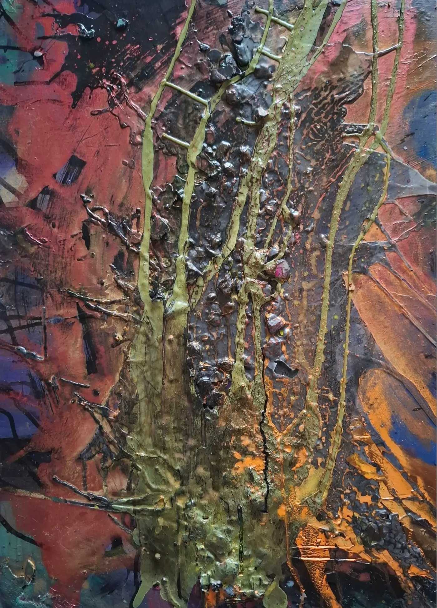

Die Galerie der Texturen
Eine haptische Reise durch Schichten von Pigment, Metall und Emotion. Jedes Werk ein Zeugnis der Zeit.
Aktuelle Kollektion
2024
Goldene Resilienz
Gold steht hier nicht für Prunk, sondern für die Stärke, die aus den Rissen der Erfahrung hervorgeht.

Das Unsichtbare
Mischtechnik auf Leinwand, 120 x 120 cm

Rosé-Metamorphose
Pigmente & Kupfer, 2023

Die Alchemie der Materialien
"In meiner Arbeit suche ich die Balance zwischen Zerstörung und Heilung. Die Textur ist die Sprache meiner Narben."
Gold für Resilienz
Gold wird Schicht um Schicht aufgetragen, um den Prozess der inneren Stärkung zu versinnbildlichen.
Bronze für das Unsichtbare
Oxidierte Bronze repräsentiert die Zeit und die Dinge, die unter der Oberfläche wirken und uns formen.

Der Moment, in dem die Farbe ihren eigenen Weg findet. Unkontrollierbar und doch perfekt.

Stille im Weiß. Wenn Textur zur einzigen Information im Raum wird.

Zwischen den Schichten. Ein Blick hinter die Kulissen der Galerie der Texturen.